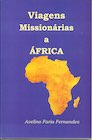
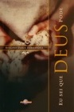
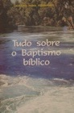
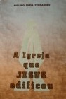
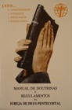
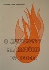
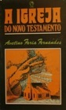
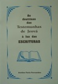
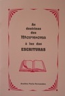

Livros
Colecção de livros escritos pelo pastor Avelino, abrangendo um conjunto alargado de temas da vida cristã, incluindo vários assuntos apologéticos, testemunhos cristãos, e intimidade com Deus, entre outros.
"(...) As palavras dos sábios são como aguilhões, e como pregos, bem fixados pelos mestres das assembleias, que nos foram dadas pelo único Pastor (...)"
Eclesiastes 12:11
|
De Vitória em Vitória — Este é um livro que relata as grandes vitórias
que o Rev. Avelino Faria Fernandes tem tido em sessenta e um anos de cristão. Acima
de tudo, as grandes vitórias, pinceladas com muitas lágrimas ...
Editora: Núcleo Ano: 2020 |
|
|  |
Viagens Missionárias a África — Neste livro, o Rev. Avelino Faria Fernandes
apresenta alguns relatos e testemunhos das suas viagens missionárias ao continente africano,
em especial a Moçambique e Angola.
Editora: Núcleo Ano: 2018 |
|
Autobiografia do Pastor Avelino Faria — Este livro contém um breve resumo dos
principais marcos biográficos da vida ministerial do Rev. Avelino Faria Fernandes, do muito
que o Deus fez, durante um ministério que se prolongou por mais de cinquenta anos.
Editora: Núcleo Ano: 2016 |
|
|
A Igreja e a Sua Origem — O Novo Testamento contém um registo completo sobre a
Igreja e a sua origem. Este livro relata-nos como Deus estabeleceu a sua Igreja, fala-nos da
da apostasia e da reforma protestante ...
Editora: Núcleo Ano: 2012 |
|
|  |
Eu Sei que DEUS Pode — O mundo vive enfermo, enfermidade essa provocada pelas
hostes espirituais do maligno. Este livro apresenta um relato Bíblico demonstrando como
qualquer oprimido pode ser liberto da escravidão de satanás, através do poder que há no
nome e no sangue de Jesus.
Editora: Dynamus Ano: 2005 |
|
Experiências com Deus — Um livro que relata as grandes experiências que o
Rev. Avelino Faria Fernandes tem tido com Deus, em quarenta e nove anos de cristão.
Acima de tudo, experiências pinceladas por muitas lágrimas ...
Editora: Gráfica Mobidique, Lda Ano: 2003 Livro Disponível em Áudio: [CD1] [CD2] [CD3] [CD4] |
|
|  |
Tudo sobre o Baptismo bíblico — O Pastor Avelino Faria Fernandes, consciente da
confusão religiosa em que todos estamos a viver foi ajudado, por Deus, a escrever este livro
sobre o verdadeiro significado do Baptismo bíblico ...
Editora: Gráfica Mobidique, Lda Ano: 2001 |
|  |
Igreja que JESUS Edificou — Este livro apresenta-nos um relato da sua organização,
doutrina e missão. Fala da apostasia dos nossos dias e da restauração da Igreja. Todo o
Pastor e Obreiro deve estudar este ...
Editora: CPAD Ano: 1998 |
|  |
Manual de Doutrinas e Regulamentos da Igreja de Deus Pentecostal —
Pensando em um trabalho que satisfizesse o anseio da Igreja de Deus Pentecostal, o autor
escreve o MANUAL de DOUTRINAS a fim de auxiliar os Pastores e Obreiros, assim como ...
Editora: Núcleo Ano: 1998 |
|  |
O Avivamento na História da Igreja — No decorrer da história do povo de Deus,
vemos o Senhor tratando com o Seu povo através da Sua Palavra de do Seu Espírito. Deus
revelava a Sua vontade aos que se dispunham a ouvir a Sua voz e obedecê-Lo.
Editora: Gráfica Mobidique, Lda Ano: 1996 |
|  |
A Igreja do Novo Testamento — Este livro apresenta-nos um relato sobre a Igreja,
seu plano de salvação, sua organização, doutrina e missão. Fala sobre a segunda vinda
de Cristo e a apostasia.
Editora: CPAD Ano: 1985 |
|
A Lei e a Graça — Este livro apresenta-nos um relato da sua organização,
doutrina e missão. Fala da apostasia dos nossos dias e da restauração da Igreja. Todo o
Pastor e Obreiro deve estudar este ...
Sobre este tema, muitas perguntas podem surgir. Uma delas é esta: Os dez Mandamentos
podem salvar? A resposta é uma só: "Não".
"(...) Lei foi dada por Moisés; a Graça e a Verdade vieram por Jesus Cristo (...)" S.João 1:17 Editora: Gráfica Mobidique, Lda Ano: |
|
|  | As doutrinas das Testemunhas de Jeová à luz das Escrituras — Este livro apresenta, de forma concisa, sistemática e bem fundamentada, os principais erros propelados pelas denominadas "Testemunhas de Jeová". Cada argumento é rebatido com base Bíblica. |
|  | As doutrinas dos Mormons à luz das Escrituras — Este livro apresenta, de forma concisa, sistemática e bem fundamentada, os principais erros propelados pelos denominados "Mormons". Cada argumento é rebatido com base Bíblica. |
|
Só ao Senhor teu Deus adorarás —
Este pequeno livrinho contém várias citações bíblicas que foram especificamente extraídas
das Sagradas Escrituras e que explicam, claramente, que Deus proíbe o culto às imagens de
escultura.
Editora: Gráfica Mobidique, Lda |